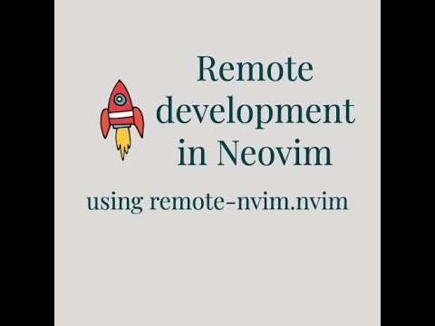

See the plugin in motion before you install it.
Link directly to the existing demo video so visitors can inspect real usage instead of reading abstract claims.
Watch demoLaunch and manage remote Neovim sessions across SSH hosts, Docker images, Docker containers, and Devpod workspaces, then drive them from your local Neovim UI.
$ :RemoteStart
> Provider: SSH config
> Workspace: backend-prod
> Remote server ready on port 34681
> Local UI attached via --remote-ui
The first viewport should explain what the plugin does. The next band should show what it looks like in use.

Link directly to the existing demo video so visitors can inspect real usage instead of reading abstract claims.
Watch demo{
"fangpin/remote-nvim.nvim",
version = "*",
dependencies = {
"nvim-lua/plenary.nvim",
"MunifTanjim/nui.nvim",
"nvim-telescope/telescope.nvim",
},
config = true,
}SSH with password, SSH keys, SSH config, Docker images, Docker containers, and Devpod-backed devcontainers.
Install Neovim remotely, keep it isolated under a plugin-managed home, and sync selected local config directories.
Inspect runtime details with `:RemoteInfo`, debug clipboard behavior with `:RemoteClipboardCheck`, and review logs when needed.
Reconnect to saved workspaces, use offline release transfers, and manage detached SSH sessions with explicit reattach and cleanup commands.
The docs section mirrors English and Chinese chapters across setup, providers, transport, persistence, UI, and offline install behavior.
Start with the ownership boundaries, then trace how `setup()` and `:RemoteStart` hand control to a provider session.
Read chapterSee how sessions are cached in-memory, what gets persisted to `workspace.json`, and how reconnect works.
Read chapterInspect the rsync and tar upload paths, prompt handling, host parsing, and how Docker and devcontainer flows land on Devpod.
Read chapterFollow the progress viewer, clipboard diagnostics, health checks, offline cache scan, and remote install scripts.
Read chapter| Remote mode | Current support |
|---|---|
| SSH (password) | Fully supported |
| SSH (SSH key) | Fully supported |
| SSH (`ssh_config`) | Fully supported |
| Docker image | Fully supported |
| Docker container | Fully supported |
| Devcontainer | Fully supported |
OpenSSH client, Neovim 0.9+, `curl`, `rsync`, optional `tar`, and `devpod` when you want devcontainer workflows.
OpenSSH-compliant server, `bash`, either `curl` or `wget`, `rsync`, and network access to Neovim releases unless offline mode is used.
`:RemoteStart`, `:RemoteStop`, `:RemoteInfo`, `:RemoteCleanup`, `:RemoteClipboardCheck`, `:RemoteDetach`, `:RemoteReattach`.
Pick SSH, Docker, Docker container, or Devpod from `:RemoteStart`.
Install or reuse Neovim, prepare the isolated remote home, and sync selected local config.
Forward the port and open `nvim --remote-ui` or your custom local client callback.
Use runtime diagnostics, clipboard checks, saved workspace records, and SSH detach/reattach when needed.
Use the docs section for implementation details, then drop to the README and vimdoc for installation steps and command reference.